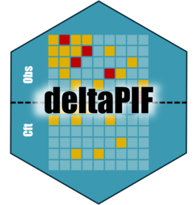

Transform a pif object into a data.frame
as.data.frame.RdGets the potential impact fraction value, the link_variance and the confidence interval values
Examples
#Transform one pif
my_pif <- pif(p = 0.5, p_cft = 0.25, beta = 1.3, var_p = 0.1,
var_beta = 0.2, label = "My pif")
as.data.frame(my_pif)
#> value standard_deviation ci_low ci_up confidence type label
#> 1 0.285835 0.2689564 -0.4940436 0.6586233 0.95 PIF My pif
#Transform more than one pif
my_paf <- paf(p = 0.5, beta = 1.3, var_p = 0.1, var_beta = 0.2,
label = "My paf")
as.data.frame(my_pif, my_paf)
#> value standard_deviation ci_low ci_up confidence type label
#> 1 0.285835 0.2689564 -0.4940436 0.6586233 0.95 PIF My pif
#> 2 0.571670 0.2159692 -0.1507069 0.8405618 0.95 PAF My paf
#Transform averted cases
cases_1 <- averted_cases(16234, my_paf)
as.data.frame(cases_1)
#> value standard_deviation ci_low ci_up confidence label
#> 1 9280.49 4958.296 -437.5906 18998.57 0.95 My paf
#Transform multiple averted cases
cases_2 <- averted_cases(87980, my_pif)
as.data.frame(cases_1, cases_2)
#> value standard_deviation ci_low ci_up confidence label
#> 1 9280.49 4958.296 -437.5906 18998.57 0.95 My paf
#> 2 25147.76 33464.230 -40440.9236 90736.45 0.95 My pif